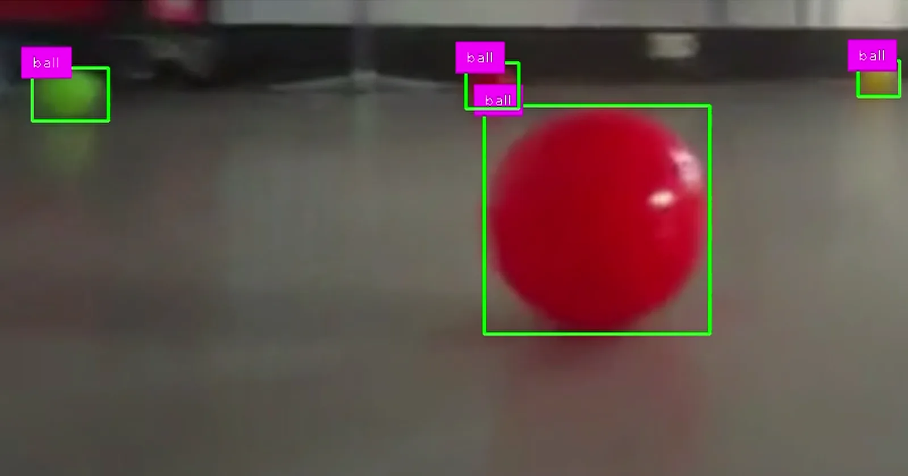
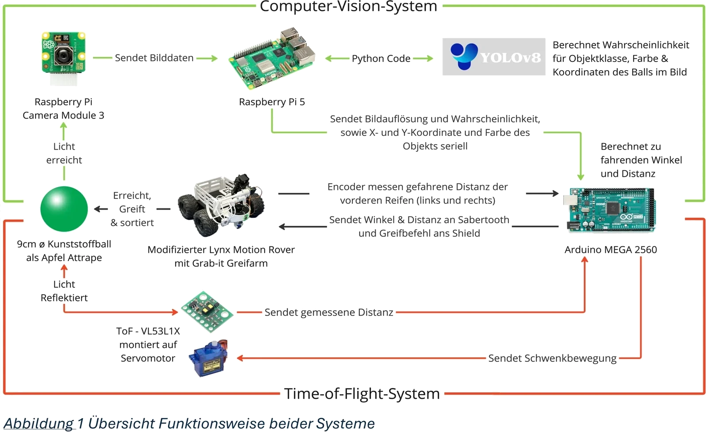

← Selected work
Course project · 10/2023 – 10/2024
Engineering Office III & Product Engineering I · TH Köln
Autonomous Harvesting Robot
A rover, an arm and a detector that find and pick up “apples” (plastic balls) on their own, plus a quantified comparison of a time-of-flight scanner against computer vision.
- Developed an autonomous harvesting system, combining a rover, a robotic arm, and a detector.
- Modelled kinematics and implemented P/PI control for approaching and picking up apples.
- Built a ToF-based 2D scanner, trained a YOLOv8n model on 2,445 self-collected images (Raspberry Pi 5, 10 to 15 FPS), and compared detectors quantitatively.
- Demonstrated the YOLO-based system was ~18× faster (50.9 → 2.8 s/m) and reduced task error rate from 40% to 0% on an indoor track with 18 target positions (Welch's t-test, Fisher's exact test).




System architecture
We first developed the rover with a servo-swept time-of-flight scanner for object detection. An Arduino Mega 2560 computes heading and distance and drives the rover and gripper. We then developed a camera-based YOLO pipeline on a Raspberry Pi 5 as a replacement for the scanner. Keeping the rest of the system largely unchanged allowed us to compare speed and error rates. Diagram labels are in German.